Mantis SeadiverA submarine through an ocean that dreams itself, on an M5Stack Core2.
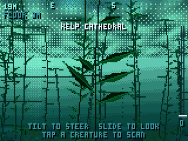
Plug in your Core2 and install straight from Chrome or Edge on a computer, or download the firmware to flash it yourself.
The sunlit zone
Reefs, kelp and seagrass under a rippling ceiling of light. The sea is only dreamt ahead of you; behind you it's forgotten, and nothing is the same twice.
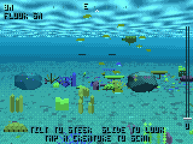
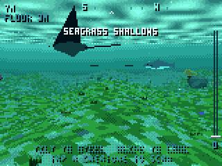
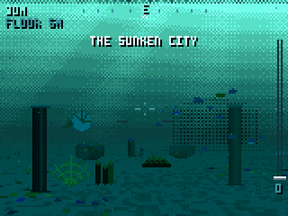
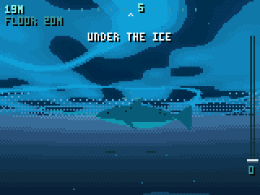
Flying it
The controls come from SpaceMantis. Hold the Core2 comfortably; that pose becomes neutral.
- Tilt
- Tip the top away to dive, toward you to climb, lean to turn. She turns with a little weight.
- Slide
- Drag across the screen to steer directly.
- Throttle
- The slider on the right edge. A soft click at cruise; the bottom is all stop.
- Tap
- Scan a creature or a coral. Each new one goes into the databank.
- A
- Sonar ping. Hold for the chart: where you are and where the sea is taking you.
- B
- Level off. Hold to switch the floodlights.
- C
- Back to cruise. Hold for the databank.
- Long press
- Sound off or on.
Cruise low near the seabed and the next place lies deeper; climb toward the light and the seabed rises to meet you.
The twilight zone
The red goes first, then the green. Cliffs drop into blue, and the floodlights come on by themselves.
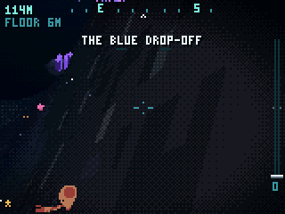
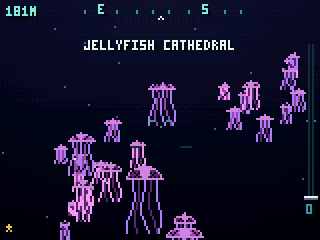
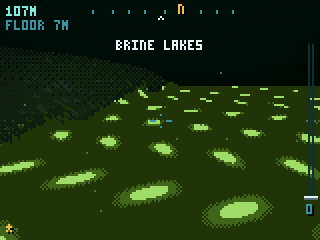
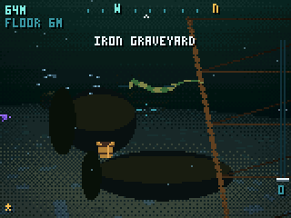
The midnight zone
No sunlight reaches here. What you see is your own light, and the light of things that make it themselves.
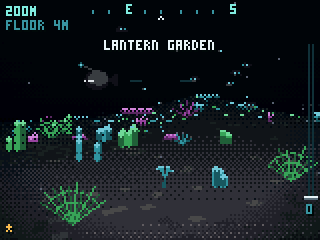
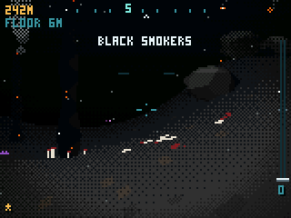
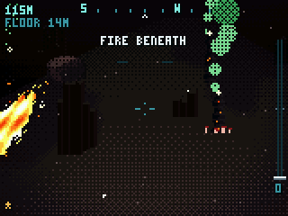
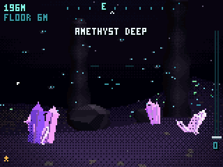
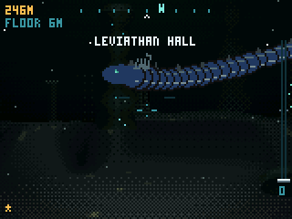
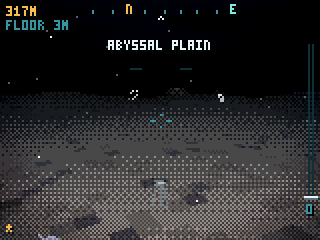